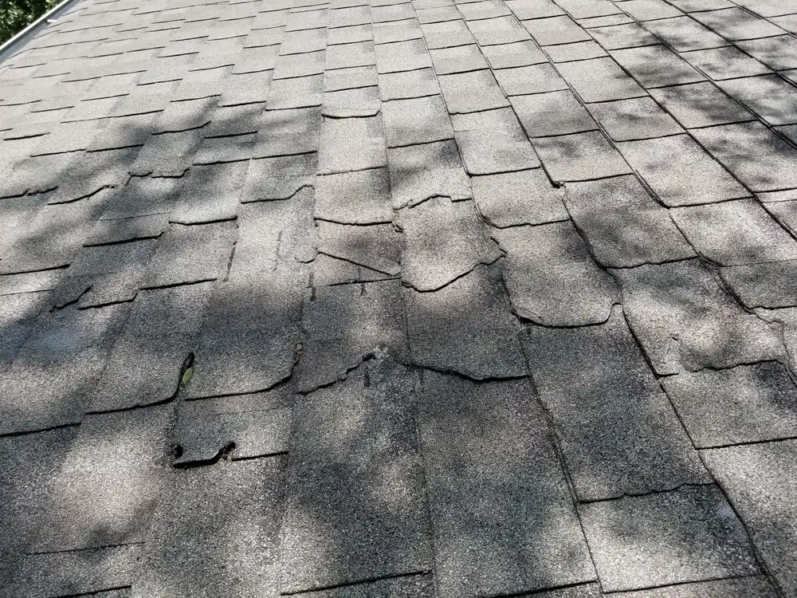

Roofing in Knoxville, TN
Roof repair in Knoxville: find the leak, fix the leak
Most leaks start in one of five places, and most of them can be fixed with a repair. Text us a photo of what you're seeing and we'll tell you what we think it is before anyone drives out.

- Free drone inspection. Photos you keep either way.
- Written, line-by-line prices. No number scribbled on a card.
- The owner writes every estimate. Ryan Dix, Knoxville.
- Text a photo, get an answer. Same number as the phone.
- Crestone started in Colorado in 2018. Run here by Ryan Dix, who lives in Knoxville.
Text us a photo first
Snap the stain, the shingles in the yard, or the spot you can see from the street. Send it with your address and we'll tell you what we think it is.
Five common places a roof leaks
Cracked pipe boots. The rubber collar around a plumbing vent dries out in the sun and splits. From inside, it shows up as a round stain on the ceiling below a bathroom or kitchen, often after a hard rain but not a light one.
Flashing at walls and chimneys. Where a roof meets a wall or a chimney, metal flashing turns the water. When it's loose, rusted, or was caulked instead of tucked, water runs down behind the siding. Inside, you see a stain on the wall next to the ceiling, or a damp spot on the chimney breast.
Wind-lifted shingles. A strong gust breaks the seal on older shingles and folds them back. You might see shingles in the yard, or nothing at all from the ground. Inside, a leak shows up only when rain blows from one direction.
Skylight curbs. The leak is rarely the glass. It's the flashing around the box the skylight sits on. Look for drips at the corners of the skylight well, or stains on the drywall around it.
Nail pops. A nail backs out of the deck and pushes up the shingle above it, and water follows the nail down. Inside, these look like small, scattered drips, often in the attic before they reach a ceiling.
Leaking right now?
Do this tonight, then call us:
- Put a bucket under the drip and move anything valuable out of the way.
- If the ceiling is bulging, poke a small hole at the lowest point so the water drains into the bucket instead of bringing the drywall down.
- Take photos of the stain and anything that got wet. Your insurer may want them.
- Stay off the roof in the rain.
Then call or text us at (865) 830-8126. We'll get it covered as soon as it's safe to go up.
Our repair rule
We photograph the problem before we touch it and the fix after we're done, and you get both sets of photos. If a repair needs a shingle that won't match, we show you the closest match before we nail it down. If what we find is bigger than what you called about, we stop and tell you before doing more.
When a repair stops making sense
Some roofs reach the point where each repair only buys a few months. When we think yours is there, we'll say it plainly and price both options. Our repair or replace guide walks through how we decide. If a storm caused the damage, start with storm damage and insurance or read hail damage versus wind damage.
Questions about roof repair
Can you fix a leak instead of replacing the whole roof?
Usually, yes. Most roof leaks start at a handful of spots: cracked pipe boots, flashing at a wall or chimney, a few wind-lifted shingles, or a skylight. Each of those can usually be fixed on its own. If a repair will stop the leak, the repair is what we quote. We photograph the fix and tell you plainly when a roof has reached the point where patching is throwing money away.
My roof is leaking right now. What do I do?
Put a bucket under the drip and move anything valuable. If the ceiling is bulging, poke a small hole in the lowest point so the water drains into the bucket instead of bringing the drywall down. Take photos. Don't go on the roof in the rain. Then call or text us at (865) 830-8126 and we'll get it covered as soon as it's safe to go up.
Can I just text you a photo?
Please do. Text a photo of the problem (the stain on the ceiling, the shingles in your yard, the spot you can see from the street) to (865) 830-8126 with your address. We'll text back what it looks like and whether someone needs to come out. It's the fastest way to find out if a problem is small.
What if replacement shingles don't match the rest of my roof?
It happens a lot, because colors get discontinued and old shingles fade. For a repair, we bring the closest match we can find and show you a photo before we nail it down. After a storm claim, ask your insurer in writing how your policy treats a roof that won't match. Our shingle matching guide goes through your options.
Get your leak looked at
Text a photo first, or send four quick details and we'll call you.
Rather talk? Call (865) 830-8126. Rather text? Send a photo.